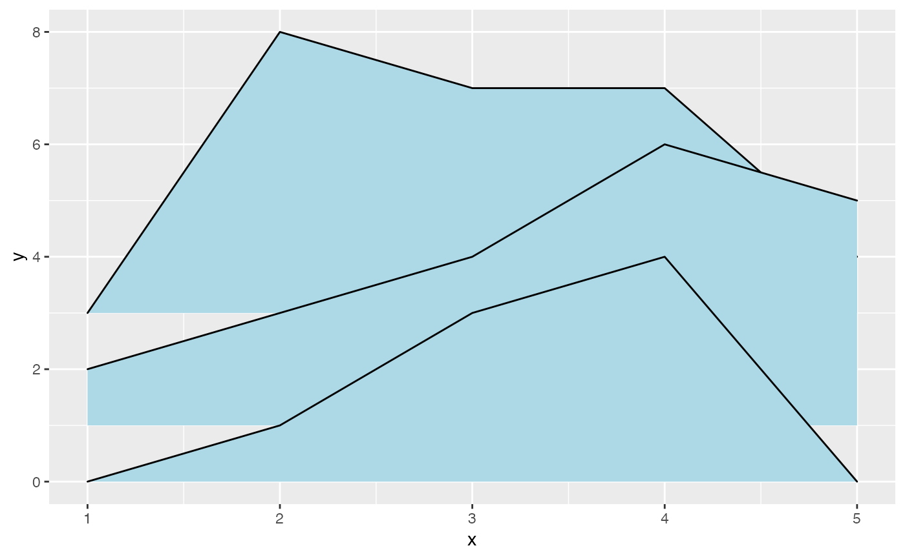

Plots the sum of the y and height aesthetics versus x, filling the area between y and y + height with a color.
Thus, the data mapped onto y and onto height must be in the same units.
If you want relative scaling of the heights, you can use geom_density_ridges with stat = "identity".
geom_ridgeline( mapping = NULL, data = NULL, stat = "identity", position = "identity", na.rm = FALSE, show.legend = NA, inherit.aes = TRUE, ... )
| mapping | Set of aesthetic mappings created by |
|---|---|
| data | The data to be displayed in this layer. There are three options: If A A |
| stat | The statistical transformation to use on the data for this layer, as a string. |
| position | Position adjustment, either as a string, or the result of a call to a position adjustment function. |
| na.rm | If |
| show.legend | logical. Should this layer be included in the legends?
|
| inherit.aes | If |
| ... | other arguments passed on to |
In addition to drawing ridgelines, this geom can also draw points if they are provided as part of the dataset.
The stat stat_density_ridges() takes advantage of this option to generate ridgeline plots with overlaid
jittered points.
Required aesthetics are in bold.
x
y
height Height of the ridgeline, measured from the respective y value. Assumed to be positive, though this is not required.
group Defines the grouping. Required when the dataset contains multiple distinct ridgelines. Will typically be the same
variable as is mapped to y.
scale A scaling factor to scale the height of the ridgelines.
A value of 1 indicates that the heights are taken as is. This aesthetic can be used to convert
height units into y units.
min_height A height cutoff on the drawn ridgelines. All values that fall below this cutoff will be removed.
The main purpose of this cutoff is to remove long tails right at the baseline level, but other uses are possible.
The cutoff is applied before any height
scaling is applied via the scale aesthetic. Default is 0, so negative values are removed.
colour Color of the ridgeline
fill Fill color of the area under the ridgeline
alpha Transparency level of fill. Not applied to color. If you want transparent lines, you can set their
color as RGBA value, e.g. #FF0000A0 for partially transparent red.
group Grouping, to draw multiple ridgelines from one dataset
linetype Linetype of the ridgeline
size Line thickness
point_shape, point_colour, point_size, point_fill, point_alpha, point_stroke Aesthetics applied
to points drawn in addition to ridgelines.
library(ggplot2) d <- data.frame(x = rep(1:5, 3), y = c(rep(0, 5), rep(1, 5), rep(3, 5)), height = c(0, 1, 3, 4, 0, 1, 2, 3, 5, 4, 0, 5, 4, 4, 1)) ggplot(d, aes(x, y, height = height, group = y)) + geom_ridgeline(fill="lightblue")